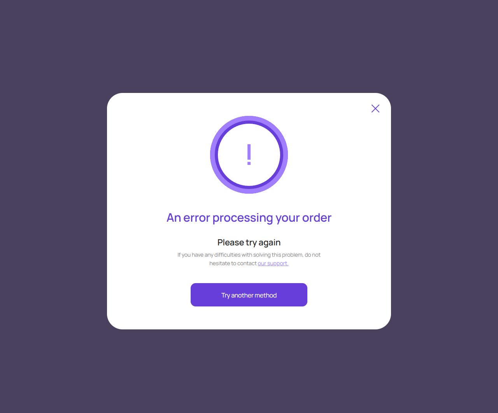
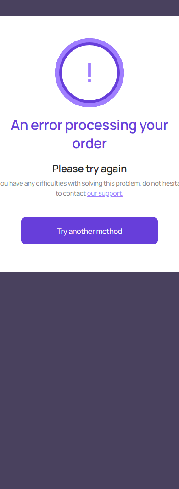

Ошибка заказа
account/payment-order-error.html
Сохранить контекст и объяснить следующий шаг.
| Когда открывается | Серверная ошибка оплаты |
|---|---|
| Данные | Заказ/попытка; причина без чувствительных данных. |
| Сценарий | Try another method после проверки результата → выбор; Support → связанный запрос. |
| Переходы | Проверка заказа · Поддержка |
Общая и предметная логика. Снимки и подписи элементов — исходная редакция макета; поздние уточнения ТЗ имеют приоритет в своей области. Это не проверка текущего сайта.
Состояние 1280 · 1280 × 1062


Элементы и ожидаемые действия
| Элемент | Название в макете | Действие | Ожидаемый результат |
|---|---|---|---|
| E001 Скрыт в этом состоянии | Upstream payment state | Информационный блок/область фокуса, не самостоятельная команда. | Показывать актуальные данные соответствующего сценария; фокус или чтение не выполняют мутацию. |
| E002 Виден | Close payment error | Закрыть локальное окно или вернуться к инициатору; Stay отменяет намерение завершить. | Вернуть фокус и исходный контекст. Не выполнять оплату, удаление или Complete. При неизвестном результате платежа сначала сверить заказ. |
| E003 Виден | our support. | Открыть/подать обращение о конкретном диалоге, консультации или платеже. | Один связанный клиентский тикет; Internal закрыт. Жалоба не выполняет возврат автоматически. |
| E004 Виден | Try another method | Выбрать разрешенный провайдером способ оплаты для текущего заказа. | Не списывать автоматически; при ошибке сначала сверить исходную попытку. Показать метод только при реальной поддержке. |
Состояние 390 · 390 × 1062


Элементы и ожидаемые действия
| Элемент | Название в макете | Действие | Ожидаемый результат |
|---|---|---|---|
| E001 Скрыт в этом состоянии | Upstream payment state | Информационный блок/область фокуса, не самостоятельная команда. | Показывать актуальные данные соответствующего сценария; фокус или чтение не выполняют мутацию. |
| E002 Виден | Close payment error | Закрыть локальное окно или вернуться к инициатору; Stay отменяет намерение завершить. | Вернуть фокус и исходный контекст. Не выполнять оплату, удаление или Complete. При неизвестном результате платежа сначала сверить заказ. |
| E003 Виден | our support. | Открыть/подать обращение о конкретном диалоге, консультации или платеже. | Один связанный клиентский тикет; Internal закрыт. Жалоба не выполняет возврат автоматически. |
| E004 Виден | Try another method | Выбрать разрешенный провайдером способ оплаты для текущего заказа. | Не списывать автоматически; при ошибке сначала сверить исходную попытку. Показать метод только при реальной поддержке. |